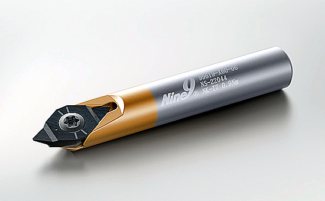

NINE9 · ENGRAVING TOOL FINDER
你想刻出多細的線？
從刻線寬度或深度開始，找到合適的雕刻刀系列。

設定你的刻線
線寬、深度至少填一項，其餘可先不指定。
試試看
看工件的刻槽剖面
依線寬、深度與角度找刀具
FIND YOUR TOOL
找到適合的雕刻刀
先瀏覽系列，或填入加工需求縮小範圍。
已比對型錄的線寬與深度範圍；實際槽底形狀及兩者的對應關係，選定刀片後再確認。
型錄資料：Engraving Tool，p.68–83查看產品型錄 PDF